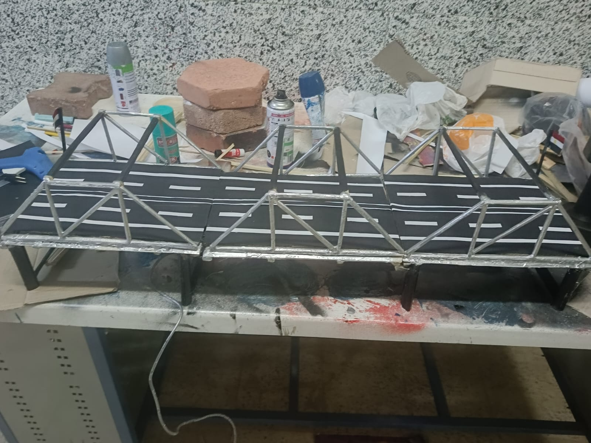
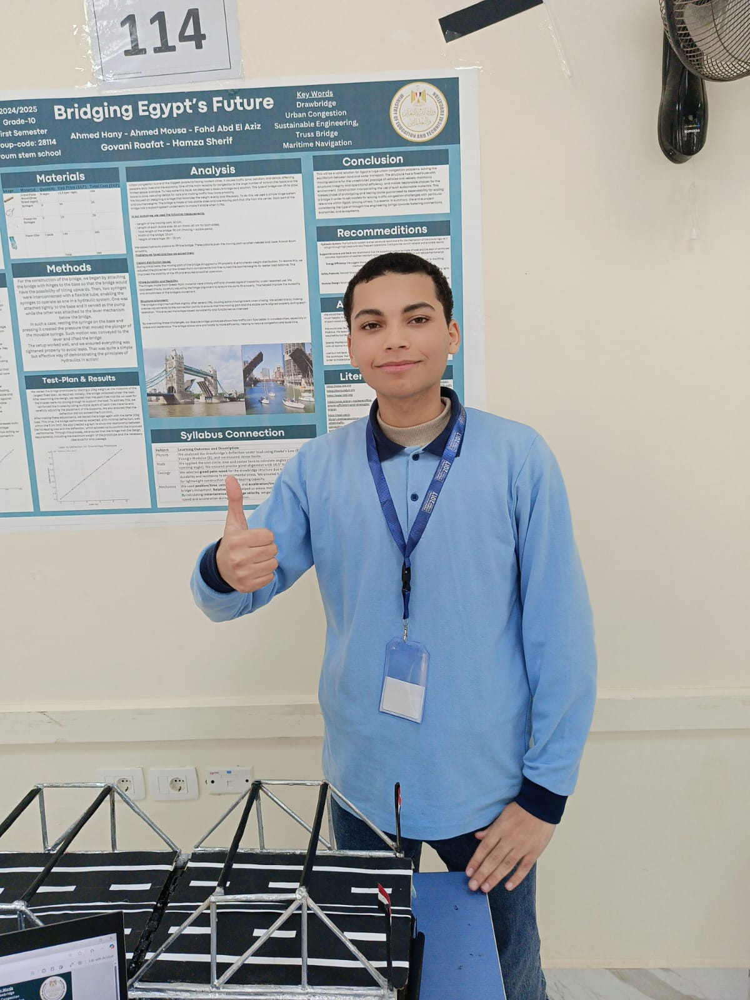

Here is my first project! Grade 10 semester 1. Bridging Egypt's future!!
This is an image for the prototype:

This is an image of me during the exhibition:

It's a movable truss-bridge that opens using hydraulic press. We used two water syringes to push the movable part.
The material used to construct the bridge is palm-greed and we used AP glue for stability. It was a fun project!